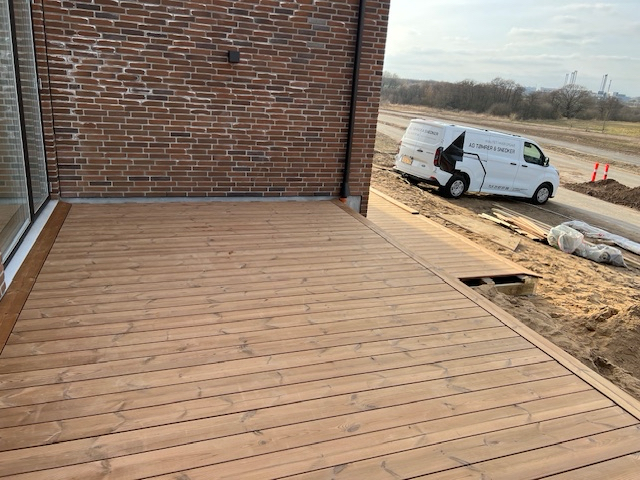
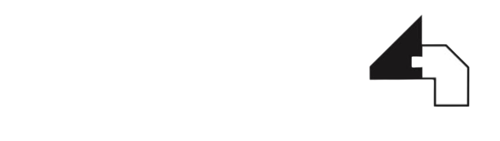
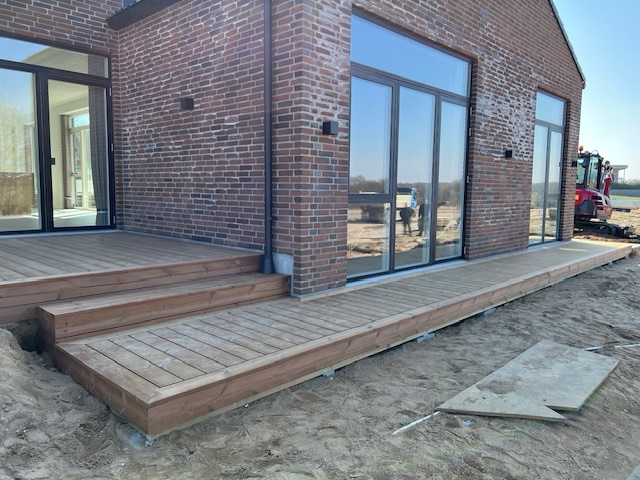
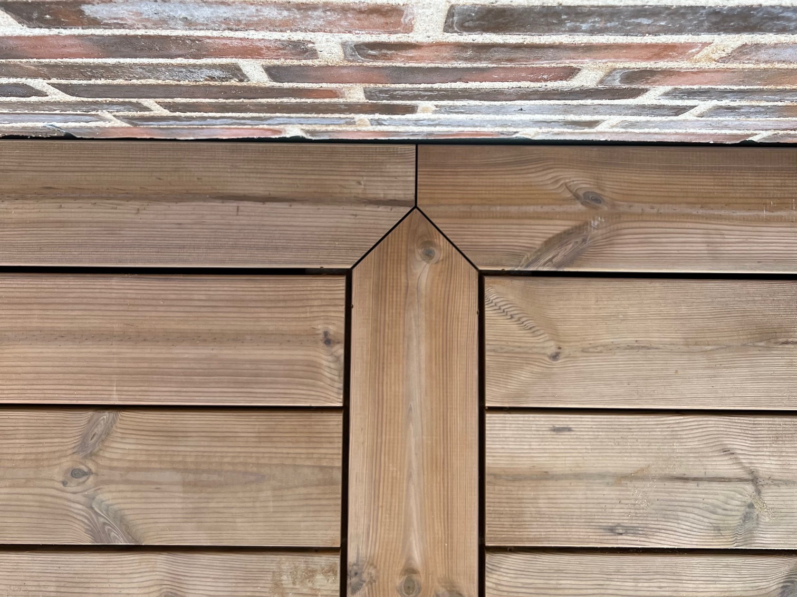
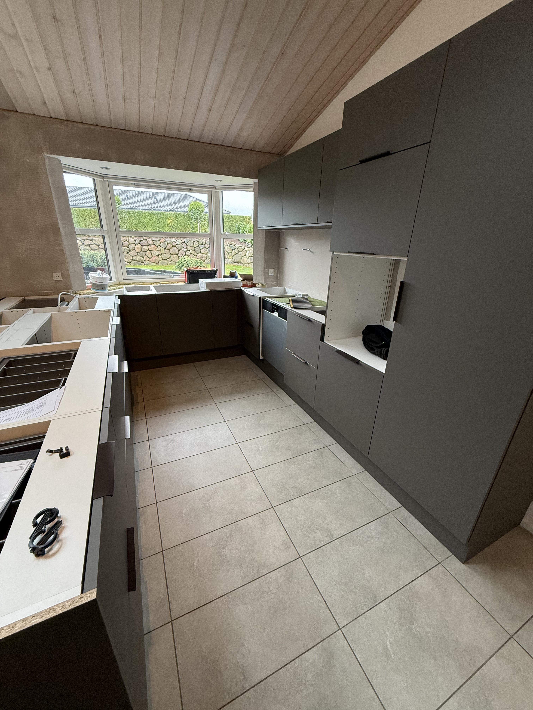
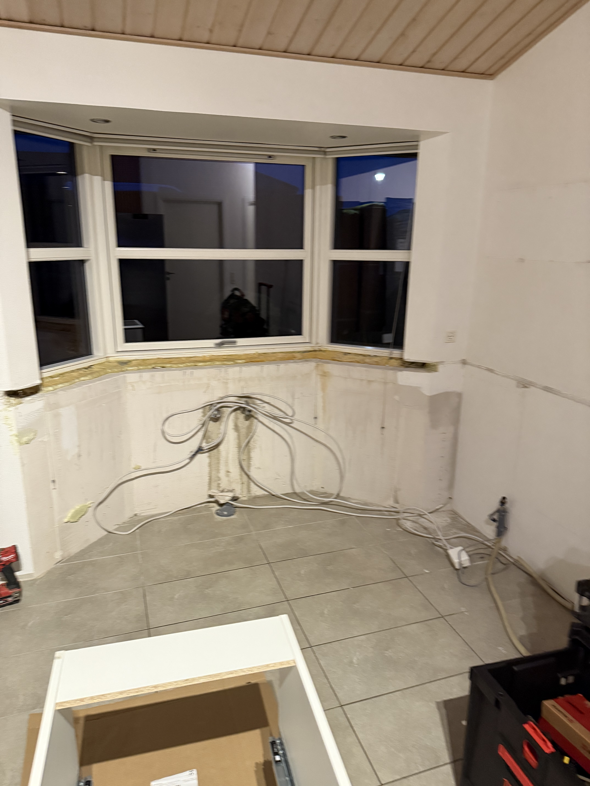
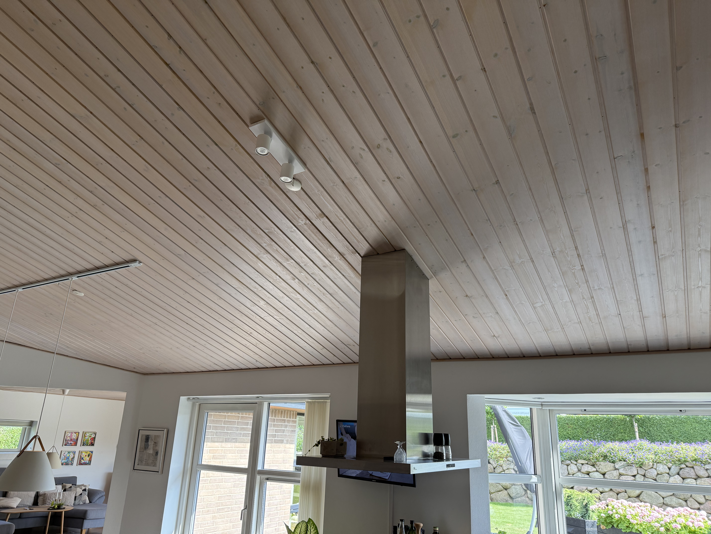
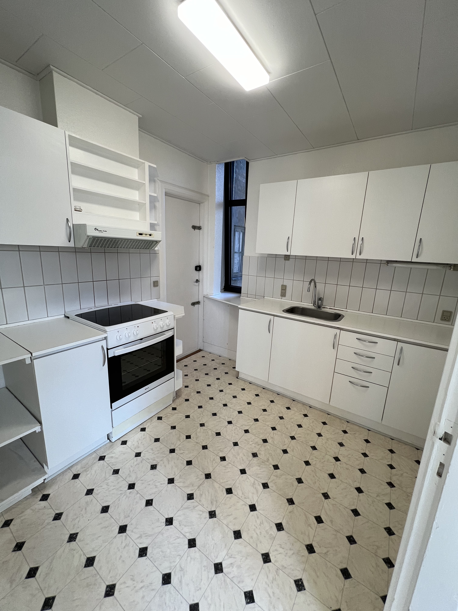

Erfaring
Vi har mange års erfaring med opbygning af træterrasser og sikrer altid professionelt kvalitetsarbejde.

AG Tømrer & Snedker Få et tilbudTømrerarbejde i Trekantsområdet
Vi skaber solide løsninger i træ – med øje for detaljen, respekt for materialet og en aftale, du kan regne med.
Hos os får du solidt håndværk og personlig service, der sætter standarden for kvalitet. Vi prioriterer at levere 1. klasses resultater til den aftalte tid, så du kan være sikker på, at dit projekt er i de bedste hænder. Vi stræber altid efter at overgå dine forventninger og skabe et resultat, du kan være stolt af.
AG Tømrer & Snedker ApS er etableret i april 2024 og holder til i Trekantsområdet, men kører gerne længere for den rette opgave. På din opgave møder du indehaveren Armandas, som vil gøre det ypperste for at du bliver tilfreds. Armandas er faglært tømrer og har 5 års tømrererfaring.

Vi har mange års erfaring med opbygning af træterrasser og sikrer altid professionelt kvalitetsarbejde.

Er du på udkig efter ny inspiration? Vi er her for at hjælpe dig med at finde nye idéer og kreativ sparring.

Vi gør en ekstra indsats for at sikre, at alle detaljer er præcise og gennemarbejdede.
Hvert projekt begynder med god dialog og ender med en løsning, vi begge kan stå inde for.






“Vi bygger, som var det til os selv.”
Vi er en erfaren tømrervirksomhed med base i Vejle og arbejder i hele Trekantområdet. Vi er specialiseret i arbejde med træ og har gennem flere år opbygget solid erfaring med både traditionelle og moderne tømreropgaver.
Du ved altid, hvem du skal ringe til.
Ingen overraskelser i tid eller pris.
Vi rydder op – også i detaljerne.
Skal vi bygge noget sammen?
Ring på 21 97 37 39 eller send en mail til mail@agts.dk
Kontakt os ↗